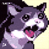

ㅠㅠㅠㅠ퓨ㅠㅠㅠ
랄로야 거기에서 잘있어 ㅜㅜ
https://www.instagram.com/p/DaZuv8zD80O/?img_index=1&stkn=MTd2OGE3cXhwb3QxOQ==
ㅠㅠㅠㅠ퓨ㅠㅠㅠ
랄로야 거기에서 잘있어 ㅜㅜ
https://www.instagram.com/p/DaZuv8zD80O/?img_index=1&stkn=MTd2OGE3cXhwb3QxOQ==


스트리머 죽은줄 ㄷㄷ
김해에선 낙곱새,제육 많이 먹고 행복하길...
티~원
(고인 톤으로)

랄로…ㅠ
그곳은 편해? 편하면 자세를 그대로해ㅠ...

예~ 뭐 그렇게 됐습니다~
랄로 살라만카야ㅠㅠㅠㅠㅠ
아이고 ㅠㅠ 방송 안키던게 다 건강문제 때문이었구나 ㅠㅠㅠ
프로의식 ㅈ도없는 도박중독자 새기라 욕했던 나를 용서해다오 ㅠㅠㅠㅠ
(랄뚜기 호들갑콘)
나만 랄로 살라만카 생각했냐 ㅋㅋ
난 둘 다 ㅋㅋ
드디어 죽었냐ㅜㅜㅜㅜ
낙곱새벌꿀집알로에마라탕세상에서 행복하길
랄로야 ㅠㅠㅠㅠ